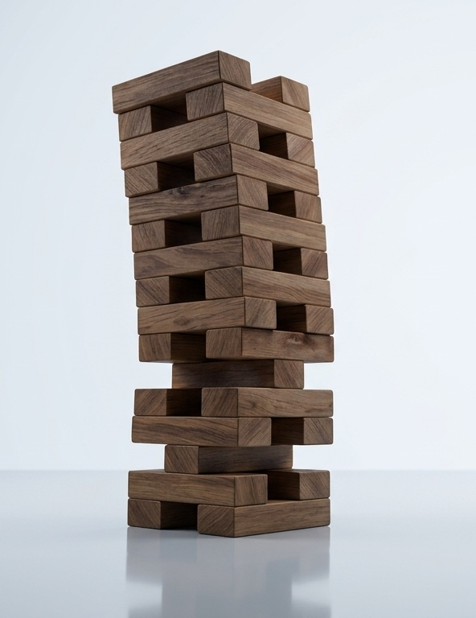
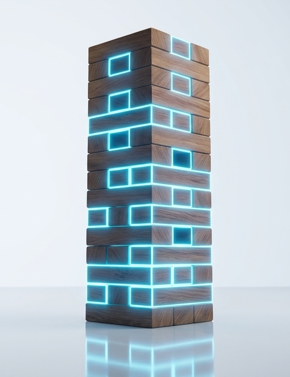

Workflows + workforce
Agents turn gaps into structural strength.

Without AI agents
The unbraced tower
Disconnected workflows and a stretched workforce leave critical processes unmonitored.

With AI agents
The fortified mesh
Agents brace every workflow and every role, monitoring 24/7, with people making the decisions.